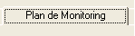
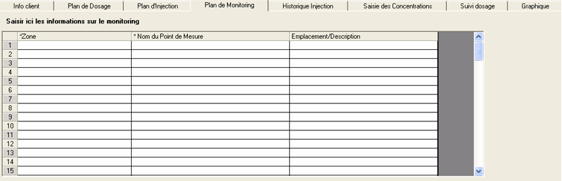
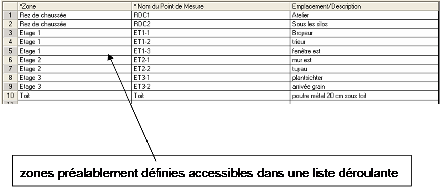
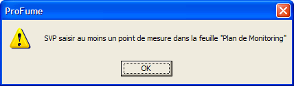

Onglet Plan de Monitoring
Une fois le Plan
d'injection développé, vous pouvez passer à l'étape suivante, la définition du
Plan de monitoring. Le Plan de Monitoring est le quatrième onglet du Fumiguide ProFume où la ligne de monitoring est définie (points de mesure par zone).

L'objet du Plan de Monitoring est
d'organiser les points de mesure par zone(s) dans l'espace fumigé. Aussi, vous
pouvez saisir un Emplacement/Description là où des lignes de monitoring sont
placées. L'exemple ci-après montre l'onglet Monitoring avant la saisie des
détails de ligne de monitoring.

Notez l'exemple ci-dessous comprenant quatre points de
mesure pour le moulin. Les noms de zone sont disponibles dans le menu déroulant.

Messages
d'avertissement dans l'onglet Plan de monitoring
Notez qu'au moins un emplacement de point de mesure doit être saisi dans cet onglet pour procéder au monitoring de la concentration pendant la période d'exposition.

L'onglet Saisie des concentrations permettra la saisie des mesures de concentration correspondant aux points de mesure créés dans l'onglet Plan de monitoring.